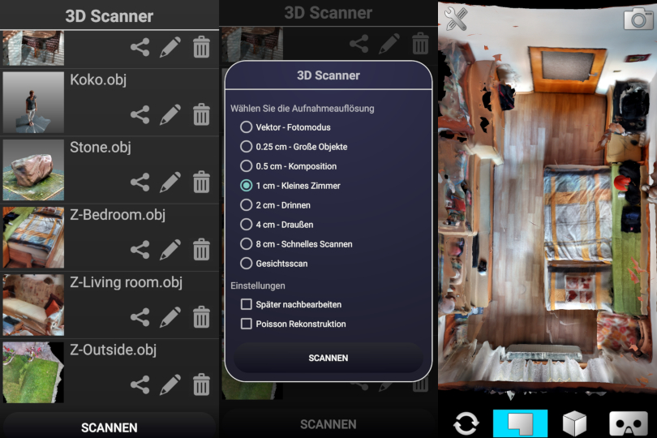

|
Luboš Vonásek is a standalone developer, who released an app at the end of 2016 for the Google Tango project called OpenConstructor. The project Tango was terminated in summer 2017, and there were no other technologies capable of 3D scanning on mobile phones. 3D Live Scanner3D Live Scanner (earlier 3D Scanner for ARCore) is the first Android app for 3D scanning interiors/exteriors reaching a mentionable market share (200K installs on the beginning of 2021). The app supports multiple AR technologies. The scanning quality is very depending on the smartphones that are used. Since summer 2019 there are two devices which perform significantly better than others (thanks to the great implementation of Time-of-Flight sensor using Huawei AREngine technology): The app is available on:Google Play - free version
Google Play - paid version
Huawei AppGallery - free version
Huawei AppGallery - paid version

ToF Viewer / Night VisionFor viewing the data of the Time-of-Flight sensor, an app was developed. In turned out that this works as a night vision to some extend (about to 4 meters on Huawei P30 Pro). This went viral in summer 2020 and it reached very quickly 100k downloads. The app is available on:Google Play
Huawei AppGallery
Face Switch ARAs a part of 3D Live Scanner there is a feature for scanning faces. The feature reached very good results and it found a way to a standalone app which can replace faces in realtime. The app is available on: |